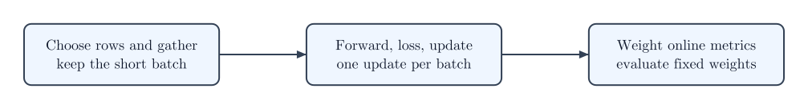
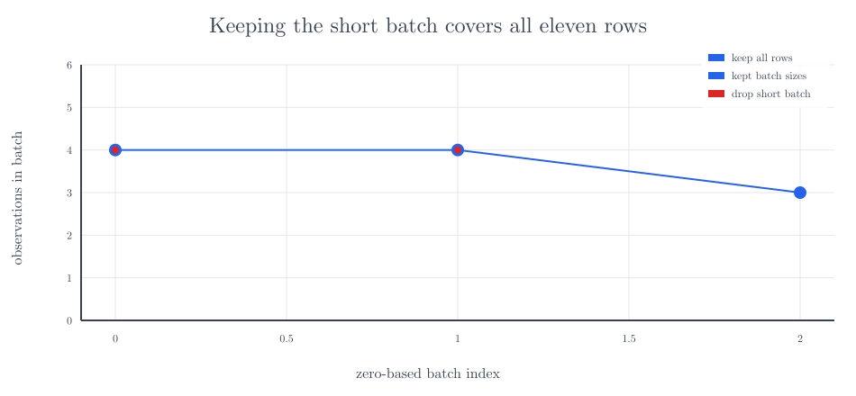
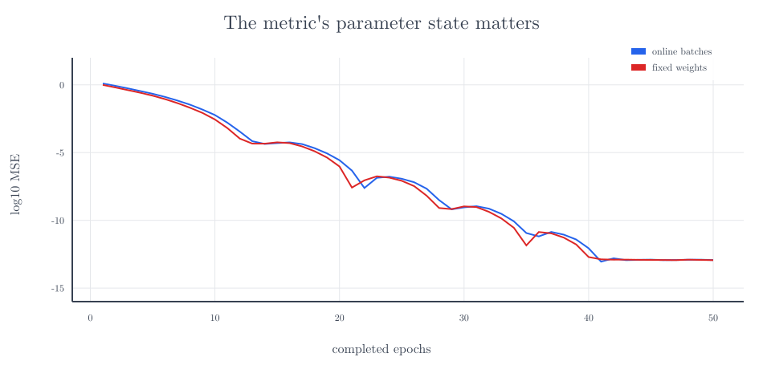
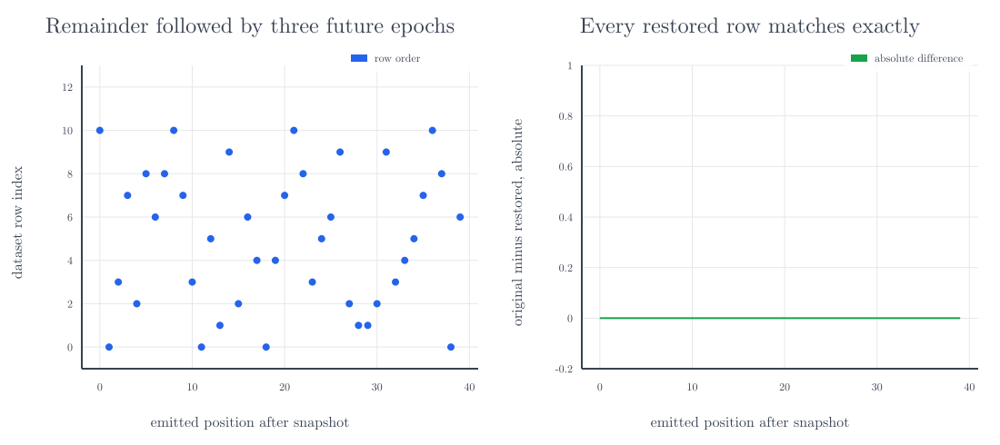

Training Loops: Batches, Metrics and Reproducible Resume
Abstract
A training loop chooses rows, forms a loss, updates parameters and records progress. Those operations use different clocks: an epoch visits the dataset, an optimizer call advances one update, and a metric may summarize changing or fixed weights. We first check an eleven-row example by hand, then fit a two-feature affine model to 103 observations in batches of sixteen. Finally we save a sampler midway through an epoch and verify both its remaining rows and three future shuffles after restoration.
The method
For N observations and maximum batch size B, keeping the final short batch gives ceil(N/B) updates per epoch and visits every row once. Dropping it gives floor(N/B) updates and omits the final N mod B rows of that epoch's order. Shuffle changes the order, not the rows represented by the full epoch. BatchOrder starts before epoch zero; call begin_epoch() before next(), whose empty result marks exhaustion.
If batch j has n_j observations and mean loss ell_j, its sample-weighted epoch mean is
During training, each ell_j uses the parameters that existed before that batch's update. This online mean therefore combines different models. A full-data loss evaluated after the epoch uses one fixed parameter state and can differ even when both aggregations have the correct sample weights. Neither training loss estimates held-out generalization. The deterministic toy fit below has no validation selection.
Sampler state contains the current permutation, cursor, epoch and shuffle RNG. Model weights and optimizer moments/counter are separate state; save them at the same update boundary for a complete training resume. Other stochastic layers, data transforms, schedules and monitors may require additional state. The sampler test alone does not establish whole-training-job resume or cross-toolchain shuffle compatibility.
The concept diagram below is drawn by dm::graphics::Diagram. Its editable C++
source is the complete block below; regeneration uses the same datamunge toolchain
as the numerical examples. Exports consume the saved local SVG.
#include <dm/dm.hpp>
int main() {
std::filesystem::create_directories("build");
dm::graphics::Diagram diagram;
diagram.node("n0", {0.0, 0}, "Choose rows and gather\nkeep the short batch");
diagram.node("n1", {5.5, 0}, "Forward, loss, update\none update per batch");
diagram.node("n2", {11.0, 0}, "Weight online metrics\nevaluate fixed weights");
diagram.edge("n0", "n1").edge("n1", "n2");
diagram.save_svg("build/training_loop_concept.svg");
}
Simple examples
Eleven rows expose the short-batch arithmetic
Without shuffling, batches of four contain rows (0,1,2,3), (4,5,6,7), and (8,9,10). If row i has fixed loss i+1, batch means are 2.5, 6.5 and 10. Their sample-weighted mean is 66/11=6, whereas the unweighted mean of batch means is 19/3. Dropping the last batch visits eight rows and gives mean 4.5 on that different subset. This example uses fixed row losses so aggregation can be checked independently of an optimizer. Dropping rows is explicit here; it changes what an epoch's metric covers.
#include <dm/dm.hpp>
int main() {
using namespace dm::nn;
dm::dstruct::DataFrame table;
std::vector<std::string> policy;
std::vector<double> counts, means, naive;
auto p = dm::graphics::RPlot::create();
int mode = 0;
for (bool drop : {false, true}) {
BatchOrder order(11, 4, 7, false, drop);
order.begin_epoch();
WeightedMean weighted;
std::vector<double> batch, sizes;
double sum_means = 0;
for (auto rows = order.next(); !rows.empty(); rows = order.next()) {
double mean = 0;
for (auto row : rows)
mean += row + 1;
mean /= rows.size();
weighted.add(mean, rows.size());
sum_means += mean;
batch.push_back(batch.size());
sizes.push_back(rows.size());
}
const auto label = drop ? "drop short batch" : "keep all rows";
policy.push_back(label);
counts.push_back(weighted.count());
means.push_back(weighted.value());
naive.push_back(sum_means / batch.size());
if (drop)
p.points(batch, sizes, label, {220, 38, 38}, 4);
else
p.line(batch, sizes, label, {37, 99, 235})
.points(batch, sizes, "kept batch sizes", {37, 99, 235}, 7);
if (std::abs(weighted.value() - (drop ? 4.5 : 6)) > 1e-14)
throw std::runtime_error("batch arithmetic mismatch");
}
table.add_column("policy", policy);
table.add_column("observations", counts);
table.add_column("sample_weighted_mean", means);
table.add_column("unweighted_batch_mean", naive);
p.title("Keeping the short batch covers all eleven rows")
.x_label("zero-based batch index")
.y_label("observations in batch")
.y_limits(0, 6);
std::filesystem::create_directories("build");
p.size(950, 440).save_svg("build/training_batches.svg");
std::print("{}\n", table.to_md(9));
}| policy | observations | sample_weighted_mean | unweighted_batch_mean |
|---|---|---|---|
| keep all rows | 11 | 6.0 | 6.33333333 |
| drop short batch | 8 | 4.5 | 4.50000000 |

An explicit minibatch fit
Online loss and fixed-weight evaluation use different models
The 103 observations use x0=sin(.7*i), x1=cos(.4*i) and y=1.5*x0-.7*x1+.2. Adam starts at zero with rate .03. Each of fifty seeded shuffled epochs visits every row exactly once in six batches of sixteen plus one of seven. The code checks coverage, update counts and final coefficients. It records the loss before each update for online logging, then separately evaluates all rows at the final epoch weights. The plot shows log10 losses, clamped below 1e-16 only for display. The printed MSE is the raw value. A common reduction in both curves does not make the online curve a measurement of the final model or a held-out performance estimate.
#include <dm/dm.hpp>
int main() {
using namespace dm::nn;
set_num_threads(2);
std::vector<float> xv(206), yv(103);
for (int i = 0; i < 103; ++i) {
float a = std::sin(i * .7f), c = std::cos(i * .4f);
xv[2 * i] = a;
xv[2 * i + 1] = c;
yv[i] = 1.5f * a - .7f * c + .2f;
}
const auto x = from_vector(xv, {103, 2}), y = from_vector(yv, {103, 1});
auto w = zeros({2, 1}).requires_grad_(), b = zeros({1}).requires_grad_();
auto loss = [&](const Tensor& input, const Tensor& label) {
return mean(square(bias_add(matmul(input, w), b) - label));
};
OptimizerConfig c;
c.kind = OptimizerKind::Adam;
Optimizer opt({w, b}, .03, c);
BatchOrder order(103, 16, 42);
std::vector<double> epochs, online, fixed, shown, online_table, fixed_table, updates;
for (int epoch = 1; epoch <= 50; ++epoch) {
order.begin_epoch();
WeightedMean meter;
std::vector<int> visited(103, 0);
int batches = 0;
for (auto rows = order.next(); !rows.empty(); rows = order.next()) {
for (auto row : rows)
if (++visited[row] != 1)
throw std::runtime_error("duplicate row");
const auto objective = loss(take_rows(x, rows), take_rows(y, rows));
const double before = objective.item();
opt.minimize(objective);
meter.add(before, rows.size());
++batches;
}
if (meter.count() != 103 || batches != 7 ||
std::any_of(visited.begin(), visited.end(), [](int n) { return n != 1; }))
throw std::runtime_error("incomplete epoch");
const double evaluation = loss(x, y).item();
epochs.push_back(epoch);
online.push_back(std::log10(std::max(1e-16, meter.value())));
fixed.push_back(std::log10(std::max(1e-16, evaluation)));
if (epoch == 1 || epoch % 10 == 0) {
shown.push_back(epoch);
online_table.push_back(meter.value());
fixed_table.push_back(evaluation);
updates.push_back(opt.iterations());
}
}
const auto weights = w.to_vector<double>();
if (loss(x, y).item() >= 1e-9 || std::abs(weights[0] - 1.5) > 1e-4 ||
std::abs(weights[1] + .7) > 1e-4 || std::abs(b.item() - .2) > 1e-4 || opt.iterations() != 350)
throw std::runtime_error("regression reference mismatch");
dm::dstruct::DataFrame table;
table.add_column("epoch", shown);
table.add_column("online_mse", online_table);
table.add_column("fixed_weight_mse", fixed_table);
table.add_column("completed_updates", updates);
auto p = dm::graphics::RPlot::create();
p.line(epochs, online, "online batches", {37, 99, 235})
.line(epochs, fixed, "fixed weights", {220, 38, 38})
.title("The metric's parameter state matters")
.x_label("completed epochs")
.y_label("log10 MSE")
.y_limits(-16, 2);
std::filesystem::create_directories("build");
p.size(950, 460).save_svg("build/training_fit.svg");
std::print(
"{}\n\nFinal weights: ({:.9f}, {:.9f}); bias: {:.9f}; raw fixed-weight MSE: {:.9e}; updates: "
"{}.\n",
table.to_md(12),
weights[0],
weights[1],
b.item(),
loss(x, y).item(),
opt.iterations());
}| epoch | online_mse | fixed_weight_mse | completed_updates |
|---|---|---|---|
| 1 | 1.260301043 | 0.990817189 | 7 |
| 10 | 0.005909211 | 0.002776873 | 70 |
| 20 | 0.000002738 | 0.000000943 | 140 |
| 30 | 0.000000001 | 0.000000001 | 210 |
| 40 | 0.000000000 | 0.000000000 | 280 |
| 50 | 0.000000000 | 0.000000000 | 350 |
Final weights: (1.500000477, -0.700000048); bias: 0.200000018; raw fixed-weight MSE: 1.150153377e-13; updates: 350.

Checking reproducible ordering
Restore the current order and future RNG stream
The original sampler consumes the first four of eleven rows, then saves its text state locally. A new sampler with a different seed restores that snapshot. We compare the remaining seven rows and all rows in three future epochs, batch by batch. Every emitted row agrees and the saved cursor is four. Appending invalid trailing text must throw without changing the restored sampler. Exact sequences depend on the C++ shuffle implementation; the check runs both samplers in the same toolchain. To resume the fit, pair this sampler snapshot with the matching model/optimizer checkpoint from the early-stopping/checkpoint report, rather than restoring only row order.
#include <dm/dm.hpp>
int main() {
using namespace dm::nn;
BatchOrder original(11, 4, 7), restored(11, 4, 999);
original.begin_epoch();
const auto first = original.next();
std::filesystem::create_directories("build");
{
std::ofstream out("build/training_sampler.txt");
if (!out)
throw std::runtime_error("snapshot open failed");
out << original.save_state();
if (!out)
throw std::runtime_error("snapshot write failed");
}
std::ifstream in("build/training_sampler.txt");
const std::string state((std::istreambuf_iterator<char>(in)), std::istreambuf_iterator<char>());
restored.restore_state(state);
if (restored.cursor() != 4)
throw std::runtime_error("wrong restored cursor");
std::vector<double> position, rows, difference, phase, checked;
for (int epoch = 0; epoch < 4; ++epoch) {
if (epoch) {
original.begin_epoch();
restored.begin_epoch();
}
int count = 0;
for (;;) {
const auto a = original.next(), b = restored.next();
if (a != b)
throw std::runtime_error("restored batch differs");
if (a.empty())
break;
for (std::size_t i = 0; i < a.size(); ++i) {
position.push_back(position.size());
rows.push_back(a[i]);
difference.push_back(std::abs(double(a[i] - b[i])));
++count;
}
}
phase.push_back(epoch);
checked.push_back(count);
}
const auto before = restored.save_state();
bool rejected = false;
try {
restored.restore_state(before + " bad");
} catch (const std::invalid_argument&) {
rejected = true;
}
if (!rejected || restored.save_state() != before || rows.size() != 40)
throw std::runtime_error("state validation mismatch");
dm::dstruct::DataFrame table;
table.add_column("phase_0_is_current_remainder", phase);
table.add_column("identical_emitted_rows", checked);
auto order = dm::graphics::RPlot::create(), equal = dm::graphics::RPlot::create();
order.points(position, rows, "row order", {37, 99, 235}, 4)
.title("Remainder followed by three future epochs")
.x_label("emitted position after snapshot")
.y_label("dataset row index")
.y_limits(-1, 13);
equal.line(position, difference, "absolute difference", {22, 163, 74})
.title("Every restored row matches exactly")
.x_label("emitted position after snapshot")
.y_label("original minus restored, absolute")
.y_limits(-.2, 1);
std::filesystem::create_directories("build");
dm::graphics::RLayout::create(1, 2).add(order).add(equal).size(1100, 490).fit_panels().save_svg(
"build/training_resume.svg");
std::print(
"{}\n\nSaved cursor: 4; matched emitted rows: {}; invalid state rejected without mutation.\n",
table.to_md(0),
rows.size());
}| phase_0_is_current_remainder | identical_emitted_rows |
|---|---|
| 0 | 7 |
| 1 | 11 |
| 2 | 11 |
| 3 | 11 |
Saved cursor: 4; matched emitted rows: 40; invalid state rejected without mutation.

Conclusion
A reproducible training loop needs explicit row coverage, sample weighting, update counts and evaluation timing. On this toy affine problem the coefficients approach (1.5,-.7,.2) after 350 Adam updates, and sampler restoration reproduces forty future row choices. These checks cover batching and ordering; whole-job resume also needs matching model, optimizer and any other stochastic or host policy state.
References
- Kingma, D. P. and Ba, J. (2015). Adam: A Method for Stochastic Optimization. The update rule used in the explicit minibatch fit.
- TensorFlow authors. Writing a training loop from scratch. Forward/loss/update and metric-aggregation concepts; this report uses the native eager C++ APIs.
- C++ working draft. Shuffle. Generator-controlled permutation; exact sequences need not be portable across standard-library implementations.